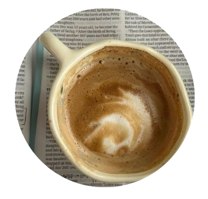
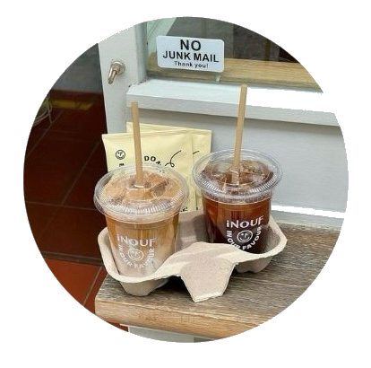

Blog
-

Why Your Morning Coffee Tastes Better Than You Think
By Admin on December 6, 2025There’s a reason your day feels brighter after the first sip of coffee. Beyond the caffeine boost, coffee awakens the senses—its aroma, warmth, and rich flavor signal the start of something new.
Read More -

Hot or Iced: Choosing the Right Coffee for Your Mood
By Admin on December 6, 2025Hot coffee brings comfort. Iced coffee brings refreshment. But the best choice often depends on your mood, not the weather. A hot cup can feel grounding and calm, perfect for slow mornings or quiet work sessions. Iced coffee, on the other hand, feels bright and energizing—ideal for busy afternoons or sunny breaks.
Read More